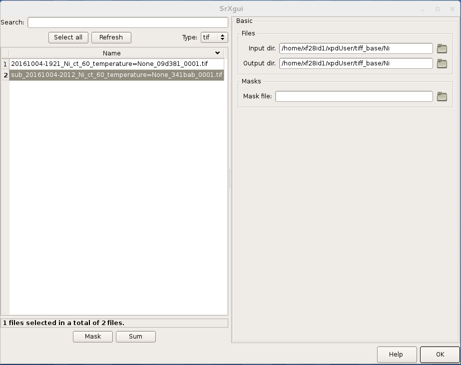
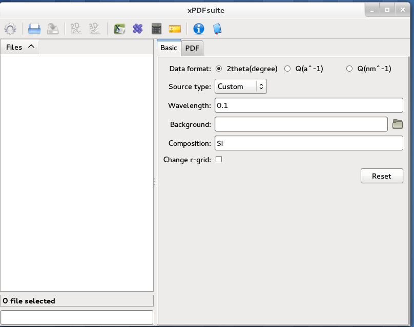

Quick Start
This quick-start contains an overview of how the xpdAcq software works.
To understand more details about it, please refer to the detailed documentation in For XPD Users
Please use this page as a reminder of the workflow and to copy & paste code snippets into the ipython terminals that are controlling your experiment and analysis. After pasting, hit enter.
Remember, to post questions about anything XPD, including software, and to see archived answers, at the XPD-Users Google group . If you are not already a member please request to join the community
XPD Data Collection Workflow Summary
This is the summary of the steps for collection data at XPD. They are explained below. Carry out the steps in this order to ensure a successful experiment.
If you haven’t already, join XPD-Users Google group . Look here for answers if you get stuck and if the answer to your question is not already there, please ask it!
run_calibration()(rerun if the experiment geometry changes).Run
bt.list()to see whatScanPlansandSamplesyou have pre-defined. Define newScanPlansas needed. To add additional samples add them to the sample excel spreadsheet and runimport_sample_info().Run setup scans on your sample to assess data quality and required exposure time by running
xrun(0, <a_count_ScanPlan>).Your data will be automatically saved and visualized via the analysis pipleine.
The data will be saved in
.../xpdUser/tiff_base/<Sample_name_from_spreadsheet>.The pipeline will save:
Dark corrected image (as
.tiff)Mask (as
.msk)I(Q) (as
.chi)I(tth) (as
.chi)G(r) (as
.gr)Calibration parameters (as
.poni, if applicable)The pipeline will visualize the:
Dark corrected image
Mask
I(Q)
I(tth)
F(Q)
G(r)
Navigate to
.../xpdUser/tiff_base/Setupdirectory to preview the data using plotting tools such asSrXgui,XPDSuite,Fit2Detc.
Run your experiment by running
xrun(<sample>, <scanplan>)and your data will be saved automatically.
These and many more things are explained below and elsewhere in the documentation. XPD-Users Google group .
Overview
The XPD end-station is run by the NSLS-II Bluesky software, a very powerful suite of Python language programs for controlling motors and detectors and running experiments to collect data. On top of Bluesky, at XPD we have put another software layer that is designed to help you do better powder diffraction experiments more easily. It is really a “user Interface” to Bluesky that simplifies some of the tasks and also helps you to collect rich metadata with your experiment that will help you to do analysis. As time goes on, there will be more analysis functionality also in the XPD software library.
You will use the xpdAcq software library to “acquire” data and you will use xpdAn to “analyze” the data. The software
is evolving rapidly and will become more powerful with time. Please check back to the documentation each time you come.
We hope you like it. All the software is built using the Python language and runs in an interactive IPython session.
You don’t need to know too much about this, but the more familiar you are with Python and IPython, the more empowered you will be.
There are many books and websites on these topics, and we gives some usage tips below too.
The heart of xpdAcq is the xrun() function which you will type to collect data, giving it as “arguments” (i.e., within the
parentheses) information
about the sample being run and the scan parameters, so it knows what to do. This will execute the scan and save the results
(both data and metadata) to NSLS-II databases. In general, your
experiment data will be saved via the analysis pipleine but if you wish
to manually save the data, you can still type save_last_tiff(), or if you have already
calibrated the instrument (and we strongly encourage you to do this first!) integrate_and_save_last() which will save the
images, but also 1D integrated patterns that you could do Rietveld refinement or PDF analysis on right away. The data are saved in your
own special directories, .../xpdUser/tiff_base/<sample-name> where you can go to visualize them using SrXgui for the tiff images
and xPDsuite for the 1D data. You can also use Fit2d if you like. You can copy the data from there to an external hard-drive
to take home. You can do your own analyses, saving data in the xpdUser directory tree. Everything in there will
be archived at the end of your experiment, and then this directory tree will be deleted leaving a clean workspace for the next user
and keeping your data secure.
Below we give a step-by-step guide to setting up and running a successful experiment. We can’t cover all possibilities, and there is
much more power within the xpdAcq and Bluesky software that you can explore as you get more advanced, but we recommend that
you follow through the following guide step-by-step, typing the commands and seeing what happens, to get used to the software and,
more importantly, to do things in the right order set up your experiment for success. XPD-Users Google group to find them. IPython terminals start the line with something like In[49]: and Out[50], so you should
see that in a terminal. Try typing show_env(). If you see something like collection-17Q1.0 or analysis-17Q1.1
(the numbers will change with time) then you are good, you will use these terminals to run your
experiment and to visualize and analyze your data, respectively. We recommend that you run collection on
work-station 2 (the central computer, look for ws2 in the title at the top of the terminal windows) and
analysis on the ws3 computer on the right.
If you can’t find the right terminal, please ask the instrument scientist. This is important to make sure
that there is a clean start for your experiment. However, if later in your experiment you ever have to restart
your terminals, then you type at the command line xpdui in the collection terminal for the collection environment
and type setup_analysis for in the analysis terminal for analysis environment.
2. Make sure that the software has been properly configured for your beamtime. In
your collection-17Q1.0 terminal, type:
bt.md
This should return a list of metadata about your experiment, such as PI last name. If not, or if the metadata is wrong, please get your beamtime environment properly set up by the instrument scientist (IS) before proceeding.
Note
Only create and work on files within the xpdUser directory tree. At the end of your
experiment, everything written in there will be permanently archived in a remote store
and then deleted from the xpd computer leaving
a clean environment for the next user. You can, of course, take anything home from within xpdUser,
or if you forgot something have the IS fetch it for you from the archive later.
Check that your analysis environment is correctly set up
1. Analysis is done in a separate (but very similar) environment to acquisition.
This will be in a separate terminal window.
Use the instructions given above for collection to check you have found the right terminal window.
For data analysis show_env() should return something like analysis-17Q1.1.
The analysis pipeline will start up automatically.
3. Once the analysis pipeline starts up a few blank visualization windows will pop up, these will be filled with data once acquisition begins.
4. Make sure the visualization software is running. We will use SrXgui to visualize 2D plots
and XPDsuite for visualizing 1D plots and getting PDFs.
Check that they are running by finding windows that look like:
SrXgui
{kind=link}
XPDsuite
{kind=link}
If you can’t find them, you will need to open them.
Open a new terminal window and type SrXgui at the command (note, you don’t type this from
inside the collection or analysis environments but from a new terminal), then open another
terminal window and type xPDsuite. If you want to use Fit2D for visualizing your data,
type fit2d at a terminal prompt on the analysis computer.
Set up your experiment
0. general
You do things in xpdAcq and xpdAn by running ‘functions’ that have a name followed
by parentheses, for example, show_env(). If the function needs to know some parameters to work,
we pass these to the function as ‘arguments’ by putting them in a comma-separated sequence in the parentheses,
e.g., xrun(5,7) (more on this later).
This is standard Python syntax.
If you don’t know what functions are available to you (and you don’t)
you can discover them by typing a few letters and then hitting the ‘Tab’ key. All
functions that the xpd software knows about that start with that sequence of letters
will be revealed. Try typing s then Tab. Too many in the list? Then add another
letter (e.g., type h so you have sh) then Tab. Can you find show_env()?
You can navigate to the one you want using the arrow keys and hit enter.
Now, if you don’t know what that function does and what arguments it needs or has as optional (and you don’t)
then type the name of the function but without the parentheses, add a ? at the end, and hit return.
This information will then be printed to the terminal screen. For example, try typing xrun? in the
collection environment.
0.5 quick look at some data
Place any sample, but maybe the Ni calibrant, at the sample position. Let’s make sure we are getting a nice
Ni diffraction pattern. In your collection-17Q1.0 terminal type:
xrun(0,0) # will run an exposure of 60 seconds on your setup sample
save_last_tiff() # will save the image in the .../xpdUser/tiff_base/Setup directory
Note, if the software gives an error that it cannot find the sample object, then you will need to load a sample spreadsheet. See below: load Sample information
Now find the SrXgui image viewer. Click on the folder icon called “Input dir” and navigate to
the .../xpdUser/tiff_base/Setup folder then select “Choose”.
You should now see a list of (or maybe just one) tiff files.
Double-click on the most recent one (in name order it will be the bottom one)
to view the one you just collected. By default, save_last_tiff() saves a dark-subtracted
image so you will see a dark corrected image of your sample.
To zoom in to part of the image, click on the plot with the mouse to make it active, then type z on the keyboard. The cursor should change to a +. Move the cross
to the top left of the selection you want to make, then hold down the left mouse
button and move the mouse to the bottom-right corner and let go the left mouse
button. To reset the figure type Esc on the keyboard. Remember, for the
keyboard inputs to work you have to first click on the plot window to make it active.
You can toggle linear and log scales using the button, and change the color scale
using the slider. To open a new image, double-click on the new sample name in the
files dialog box. You may have to click the ‘Refresh’ button if the file was
just written and doesn’t show.
1. load Sample information
Your sample information should be loaded in an excel spreadsheet, with a well defined format (a template file may be found at XPD-Users Google group)
If the IS didn’t already do it, save your sample xls file to the .../xpdUser/import directory using the name
<saf_number>_sample.xlsx, where you replace <saf_number> with the number
of the safety approval form associated with your experiment. If you are not sure
what your saf_number is you can get it by typing the following command in your collection-17Q1.0 terminal:
In[1] bt
Out[1]:
{'bt_experimenters': ['Tim', 'Liu'],
'bt_piLast': 'Billinge',
'bt_safN': '300336',
'bt_uid': 'f4ewjf9c',
'bt_wavelength': 0.1832}
where the saf_number in this case is 300336.
Next type:
import_sample_info()
which loads the sample information from the spreadsheet into the xpdAcq program and makes all the sample objects available to use in the current beamtime to collect data (see below).
Updates and additions may be made at any time by editing the Excel spreadsheet in the import directory and rerunning import_sample_info().
The Sample object list will be updated based on contents of this new sheet so
we recommend to just edit existing or add new samples to the sheet but not to delete any.
For more info Sample metadata imported from spreadsheet.
2. Calibration
run this first, then run it again each time the geometry of your measurement changes.
Place the Ni calibrant at the sample position, close the hutch and open the shutter then type in your collection-17Q1.0 terminal:
run_calibration() # default values (calibrant_file='Ni.D' and exposure=5) don't need to be typed
Note
Instruction of the calibration steps: Quick guide of calibration steps with pyFAI
Full API documentation: run_calibration API Documentation
Documentation of
pyFAIcalibration gui link
The resulting calibration parameters will be saved in the header of every scan you run until you
run run_calibration() again.
3. set up a mask
Note
After version 0.6.0, a mask will be built by the automated analysis
pipeline. Following workflow will be useful if you wish to build the mask
manually from a specific experimental setup.
You can look at the 2D image with and without the mask in SrXgui.
You can load the mask file by clicking the ‘folder’ icon by the “Mask file” field
in SrXgui, navigating
to the .../xpdUser/config_base folder and click choose. If you do not see any files
the filter is likely not set correctly. Select npy from the
‘Type:’ dropdown menu. Now you should see the file xpdacq_mask.npy.
double-click this file in the list to select it. Masked pixels will have value
0.0 (blue) and unmasked pixels will have values 1.0 (red). You should see
masked pixels around the edge of detector (edge-mask), pixels in the location
of the beam-stop, and various other pixels that have anomalous counts in them
as determined by the auto-masking process.
{kind=link}
{kind=link}
For more info: Auto-masking.
4. measuring a dataset from a sample: overview
Now it is time to collect some data. Load one of your samples on the diffractometer
and close up the hutch. To collect a dataset from a sample you will type at the
collection-17Q1.0 terminal: xrun(<sample-object>,<ScanPlan-object>)
where the <sample-object> contains sample information from the Excel spreadsheet,
and <ScanPlan-object> contains information about the scan. You will make your
own ScanPlan objects, as we describe below, but once they are made you can reuse
them again and again, for example, running the same ScanPlan on different samples. We
keep all the ScanPlans and Samples you have defined in a list that you can see by
typing bt.list() which will result in output similar to the following:
ScanPlans:
0: ct_5
1: ct_0.1
2: ct_1
3: ct_10
4: ct_30
5: ct_60
Samples:
0: Setup
1: Ni
2: kapton_1mmOD
3: kapton_0.9mmOD
4: kapton_0.5mmOD
5: activated_carbon_1
6: activated_carbon_2
7: activated_carbon_3
8: activated_carbon_4
9: activated_carbon_5
10: activated_carbon_6
11: FeF3(4,4'-bipyridyl)
12: TPT_0.9MM
13: TPB_0.9MM
14: TPP_0.9MM
15: BTB_0.9MM
16: BTC_0.9MM
17: JVL400_LiFePO4_IL
18: Film_array_on_silicon_substrate
19: ScN_on_Si_Pos1
20: ScN_on_Si_Pos2
21: ScN_on_Si_Pos3
22: nano_particle_grid
You can refer to the objects by using their name, or simply by giving their position in the list, for example,
xrun(bt.samples['Setup'], bt.scanplan['ct_5']) # referencing objects by name...or...
xrun(0,0) # reference the objects by their position (index) in
# the ``bt`` list
4.a figuring out what is the right exposure time for your sample
How long you should expose your sample for depends on many factors such as the
scattering power of your sample and the incident intensity and energy. We can
use a somewhat trial and error approach to determine a good exposure time. First
we will run some setup scans to find a good exposure. When you want scans to be
labeled as setup scans in the database, and not get muddled with your
production runs, always use the <sample-object> called Setup, which is always in
the position 0 in the bt.list(). So while setting things up you will always
type xrun(0, <some scanplan object you are testing>), regardless of what your
actual sample is.
begin by typing
xrun(0,1)
where number 1 in our list is a count-scan of 10 s. When the scan has completed, type
integrate_and_save_last() #remember you can use tab-complete to see what is available
This function saves the just-measured dataset as a tiff file in the .../xpdUser/tiff_base/Setup
directory (as long as you are using the Setup sample-object at position 0). To view the raw
data, find your SrXgui window, and use the instructions above to play around with the image.
One of the best ways to see if you have enough counts in your measurement is to look at the
integrated data. Assuming that you have already done the calibration, the integrate_and_save_last()
function should also have saved a .chi file in the same directory. This can be viewed in
xPDsuite. Locate the xPDsuite window, click on the folder icon (second from left in the main toolbar) and navigate to
.../xpdUser/tiff_base/Setup and hit choose. Make sure the filter is looking for .chi files,
make your way to the most recent one (at the bottom of the list, but you can check the date-time in the name).
Click on this and then select 1D plot, or just double click it. By default a window shows up that has
a PDF curve in it, but at the top there are radio buttons for i(q) (raw integrated data), S(Q) and F(Q) as well as g(r).
Select all of these you want to look at (you can select multiple), then play around with the
sliders if you like to try and find reliable parameters for the corrections. Make sure that
the Q(nm-1) radio-button is selected as integrate_and_save_last() saves the integrated data on a Q-grid in
units of inverse nm.
If there is too much noise in the data at high-Q you will have to try a new setup scan with a longer exposure, and keep doing this until you have found a count time that gives you sufficient counting statistics. You may have to make some new scans with different count times during this process, which brings us to…
4.b Define your own xpdAcq ScanPlans
xpdAcq can consume any bluesky Plan, but these can be challenging for the beginner to make, and beyond the scope of this quickstart. Please see the Bluesky documentation for more details on defining bluesky Plans.
Many, if not most, of XPD’s measurements can be carried out using xpdAcq ScanPlan templates.
We currently support four common scans-types (more will follow, please request yours at xpd-users Google group! ): a
simple count, a series of counts, a temperature scan, and a user-supplied list of temperatures.
You can create particular ScanPlans now to use later, with all the parameters such as start-temperature,
stop-temperature and temperature-step, or you can create
them when you need them (and reuse them after that). Examples of what to type (followed by Enter)
to create different example ScanPlans are shown
in the table below. Adapt these as you need to by changing the numbers in the arguments.
command |
|
|---|---|
|
a count scan for 5s |
|
time series with 5s count time, 50s delay and 15 repeats |
|
temperature series with 5s count time, starting from 300k to 200k with 5k per step |
|
exposure detector for 5s at 250K, 180K and 200K |
4.c measure your background file
This step is not required at this point, but it is recommended. The background-to-sample association is made in the Excel sample spreadsheet. Check the sheet to make sure that all your background samples are listed as samples, and that they are correctly linked to the samples for which they are the background.
Load the background sample (e.g., empty kapton tube) on the instrument
In your
collection-17Q1.0terminal typebt.list_bkg()to locate the relevant background sample object, for example it might be
kapton-1mmIDat position 3 in the list.
Then in the
collection-17Q1.0terminal, you will typexrungiving as arguments the background sample-object with actScanPlan object of the desired exposure.# if you are running this as a tutorial don't type this. It will take >30 mins to complete because # scanplan[3] is a 15 minute exposure and there is no stored 15 minute dark exposure for subtraction # so the code will automatically collect that too! # but to test it you could replace bt.scanplan[3] with bt.scanplan[0].... # referencing objects explicitly...or... xrun(bt.samples['kapton_1mmOD'], bt.scanplan['ct_900']) # inexplicit: give reference to ``Sample`` and ``ScanPlan`` index from the ``bt`` list. xrun(2,3)More details are available here.
How long should you run your background scan for? See discussion here but for kapton we often do it for 15-30 minutes, though it can be highly dependent on the scattering properties of your sample. For example, strongly scattering samples like Ni often need no background subtraction at all.
4.d interrogate metadata in objects
If you want to see what is in those objects in your bt.list() you can interrogate
them:
bt.samples.get_md(0) # returns metadata for item 0 in the sample list, i.e., the dummy ``setup`` sample
bt.scanplans.get_md(0) # returns metadata for item 0 in the scanplans list
Get your data
1. Save images and metadata from scans
These commands can be run in the collection-17Q1.0 or the analysis-17Q1.1 ipython environments.
Data are saved in the directory .../xpdUser/tiff_base/<sample_name> where <sample_name> is the name of the
sample that you used in the sample spreadsheet, and is the name of the Sample object.
save images from last scan:
integrate_and_save_last() # if you have all the calibration data, ... or...
save_last_tiff() # if (naughty naughty) you haven't done all the calibrations up front
With these functions, the image will be saved to a .tiff file with a recognizable
name.
The metadata associated with the image will be saved to a .yml file with the
same name, which is a
text file and can be opened with a text editor. Saving behavior
can be modified by changing the default function arguments. Type save_last_tiff?
to see the allowed values.
Pro Tip: this function is often typed just after xrun() in the collection environment,
so that the data are extracted out of the NSLS-II database and delivered to you automatically when
the scan finishes. You can then play around with them and take them home as you like. If
you write a script to run your experiment, it will typically have xrun(<#>,<#>) followed by
integrate_and_save_last()
The following
functions are more useful for running in the analysis-17Q1.1 environment to fetch scans from the database
selectively if you don’t want a dump of every scan.
save images from last 2 scans:
h = db[-2:]
integrate_and_save(h)
save images from scan 2 scans ago:
h = db[-2]
integrate_and_save(h)
We use “h”, short for “header”, for the object given back by the NSLS-II databroker (db) data-fetching software.
This is a software object that contains all the information about your scan and can
be passed to different functions to do analysis.
more information on headers is here
2. Save images and also integrate images to a 1D patterns
save your images and also integrate to a 1D pattern:
integrate_and_save_last() # the most recent scan
You could use this instead of save_last_tiff() as part of your acquisition
sequence by typing it in the collection-17Q1.0 environment.
Or use these in the analysis-17Q1.1 environment to be analyzing data over here as
the data are being collected over there…
h = db[-2:] # the last 2 scans
integrate_and_save(h, save_image=False) # saves a copy of the 1D diffraction pattern
h = db[-2] # 2 scan ago
integrate_and_save(h) # saves a copy of the image AND a copy of the 1D diffraction pattern
With these functions, the image (if requested) will be saved to a .tif file, the mask
(if there is one) will be saved
to a .npy file, and the masked-image will be integrated and saved to a .chi file.
The metadata associated with the image will be saved to a .yml file which is a
text file and can be opened with a text editor. Masking and calibration behavior
can be modified by overriding the default function arguments. Type, for example, integrate_and_save_last?
to see the allowed values.
which devices am I using?
So far, we have talked about how to use templated ScanPlan but we haven’t mentioned about which devices are used to do your experiment.
To know more about what devices are triggered by ScanPlan and how to
possibly change them, please see Device-related options
write your own scan plan
xpdAcq also consumes any scan plan from bluesky. Let’s say you
have successfully followed the bluesky documentation
and compose your own scanplan, myplan. Before execute this plan, you would need to do
a bit of work on detector configuration, which is done automatically
for you in the xpdAcq built-in plans. If you want the detector to
collect 50 frames each time we fire it, which would give a 50s exposure at a
framerate of 0.1s (framerate is another glbl option that you could reset).
xpd_configuration['area_det'].images_per_set.put(50) # set detector to collect 50 frames, so 5 s exposure if continuous acquisition with 0.1s framerate
Finally, later on in the experiment when you are ready to run it, you would run this plan just the same as a regular xpdAcq scanPlan object:
xrun(56, myplan) # on sample 56 in the sample list, run the myplan scan plan.
xrun(57, myplan)
The ability to write your own bluesky plans gives enormous flexibility
but has a steep learning curve, but you should be able to get help
setting these up from your local contact.
For more details about how to write a bluesky scan plan,
please see here.
We recommend that you use xpdAcq built-in plans wherever possible. If there
is a new scan plan that you think could be useful to other users, please post it to
the XPD-Users Google group,
and suggest that perhaps it would be great to have that
as an xpdAcq built-in ScanPlan in the future!
User scripts
Your experiment commands can be sequenced into scripts,
to be executed one after the other as you desire. To set this up, write a sequence of commands into a text file,
save it with the extension .py in the userScripts directory with a memorable name, like myNightShiftScript.py.
Double and triple check your script, then when you are ready to execute it, in ipython session type:
%run -i ~/xpdUser/userScripts/myNightShiftScript.py
Stay there for a while to make sure everything is running as expected and then go to bed!
Note
These scripts should execute as desired under normal circumstances. Runs will automatically pause if there is a beam-dump and then resume, for example. However, there are some situations where the scans can be tricked into hanging, or continuing to run without scans completing, so please check your data carefully. We are working on solutions for these edge cases.
Interrupt your scan
Just started your scan but realized you have made a mistake? Waited long enough for the scan to end and want to end it? Need to pause to refill liquid nitrogen, but then want to continue on afterwards?
You can safely interrupt scans using CTL-C using the following
crib
Interactively Interrupt Execution
Command |
Outcome |
|---|---|
Ctrl+C |
Pause soon (at next break point in the code) |
Ctrl+C twice quickly |
Pause now |
Ctrl+C three times fast |
(Shortcut) Pause now and abort |
These interrupts leave the run in a paused state. You may want to then just resume the scan sometime later (the liquid nitrogen case) or abort (you made a mistake with the scan and want to start over), or stop but save the data (the “you are fed up waiting for it to finish” case). See below for handling this.
Recovering from the paused state caused by an interrupt
After a pause, when you are ready to continue working, type one of these commands
into the collection-17Q1.0 environment:
Command |
Outcome |
|---|---|
xrun.resume() |
Safely resume plan. |
xrun.abort() |
Perform cleanup. Mark as aborted. |
xrun.stop() |
Perform cleanup. Mark as success. |
xrun.halt() |
Do not perform cleanup — just stop. |
xrun.state |
Check if ‘paused’ or ‘idle’. |
For more info: here
Write multiple-calibration plan
The multiple-calibration plan is a plan that uses multiple geometries of setups so it needs more than one set of calibration data. Here, we use an example that we would like to collect a SAXS and a WAXS at each step of a temperature ramping. We already have two poni files for each setup: saxs.poni and waxs.poni and they are in the calib folder.
We use the load_calibration_md to the calibration data from the files.
saxs_calib = load_calibration_md("calib/saxs.poni") waxs_calib = load_calibration_md("calib/waxs.poni")
Then, we use the count_with_calib to build the plan for each step. Here, at each step, we move the detector to far field using the motor, count for 5 images, move it to near field and count for another 5 images. The arguments dets is for the other detectors that we want to read other than the area detectors like the thermometer. If we delete input the 5, it will only take one image in this case.
import bluesky.plan_stubs as bps def my_per_step(dets: list): yield from bps.mv(motor, 1000.) yield from count_with_calib([detector] + list(dets), 5, calibration_md=waxs_calib) yield from bps.mv(motor, 100.) yield from count_with_calib([detector] + list(dets), 5, calibration_md=saxs_calib)
We need to be caution here when we use this function. The glbl[‘auto_load_calib’] will be turned to False when the plan is running and then turned back to the former value. If there are other plans using the glbl, it will cause unexpected behavior.
If we are using two detectors far_field_det and near_field_det instead of moving one detector, we can write our step like below.
def my_per_step(dets: list): yield from count_with_calib([far_field_det] + list(dets), 5, calibration_md=waxs_calib) yield from count_with_calib([near_field_det] + list(dets), 5, calibration_md=saxs_calib)
Now, we can use the per_step to build our temperature ramping plan. In the example here, we will do a temperature ramping at a list of temperature. At each temperature, we collect both the near field and far field data. How we will collect the data is already defined in my_per_step functions. Here, we use [t_motor] as the argument because we need to record the temperature reading from the t_motor.
def my_t_ramp(t_motor: Positioner, t_list: list): for t in t_list: yield from bps.mv(t_motor, t) yield from my_per_step([t_motor])
Then, we can run the plan in the xrun. For example, we would like to run the my_t_ramp plan for sample 0.
xrun(0, my_t_ramp(cryostream, [300., 320., 340.])))
This will run the temperature ramping using the device named cryostream at temperature 300.0, 320.0 and 340.0. The detectors and calibration metdata to use have been defined in the my_per_step so we don’t need to worry about it when you run the xrun.